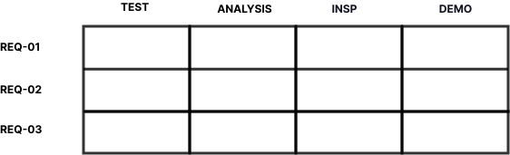

Berliner Luft
When and where are people in Berlin most exposed to air pollution?

Hourly NO₂ and PM2.5 from 15 stations, 2025. Choose a time and stations, and read all three limits in one chart.
Product designer for data-rich B2B software. First and only designer at Valispace, a systems engineering platform used by Airbus, ESA and BMW.
I designed three complex workflows there, from requirements traceability to engineering reviews. They are still in the Requirements & Systems Portal (opens in a new tab) of Altium 365, after Altium acquired Valispace at the end of 2023. I built the design practice from zero and hired my successor.
Latest project: Berliner Luft, when and where people in Berlin are most exposed to air pollution.
Independent project
When and where are people in Berlin most exposed to air pollution?
Hourly NO₂ and PM2.5 from 15 stations, 2025. Choose a time and stations, and read all three limits in one chart.
Shipped work
Requirements shared across projects, traceable as changes propagate. Validated with internal and external experts. A backend developer later told me improvements were easy to implement because the logic was mapped out well.

Months of research and prototype testing with systems engineers to find where traceability breaks down, before designing. One view of what is verified and what is missing.
Moderator, reviewer, approver: one flow from setup through rating to sign-off, with regulatory traceability.
UX founding work
Valispace, 2021–2023, as the company grew from 20 to 50 people.
Introduced user interviews and Figma prototyping, both new to the company. Tested prototypes with systems engineers before development.
Features shipped faster than the experience stayed consistent. Started a cross-functional UX guild to bring design and engineering together. Set design principles for product, API docs and marketing. Used tracked CPO/PM feedback in Jira to show leadership the rework caused by inconsistency, and got time set aside to fix it.
Promoted onto the new product team with the CTO, CPO, PMs and dev leads, as the design contact for PMs and engineers. Mentored a UX intern and led the hire of a senior designer, still at Altium today.
Framed systemic problems no one owned yet and brought engineers, developers and end users together on them. Carried design from early idea to delivery and proposed solutions to blockers.
References
She took the initiative to start a cross-functional UX guild that brought designers and developers together to improve the overall user experience.
In a very short time she learned a previously unknown field by talking to users and iterating fast with them on mockups and prototypes.
Background
2025–now
Berliner Luft, interface for hourly air quality data from 15 Berlin stations, from sketch to prototype · Navigator, EU AI Act requirements for non-lawyers, prototyped with Claude AI · System Forge, onboarding for a SysML v2 modeling tool · Berlin (remote)
2024–25
Designed and taught a digital technology programme for autistic adults, focused on technology use and digital access · Berlin
2023
Usability and accessibility of a solar-sales website · Berlin
2021–23
Sole designer, 20 to 50 employees · three shipped features · Lisbon and Bremen
2016–20
Pro Apps support for Logic Pro and Final Cut Pro users · sorted reports into defects, workflow issues and interface problems for engineering · promoted twice, Tier 1 to Tier 4 · Cork
Skills
Data-rich applications · Interaction design · Design systems · UX research & usability testing · Data visualization (Python, pandas) · Figma prototyping · Accessibility (WCAG)
Recognition
Education
Certificates
Data Analysis & Visualization, Python (StackFuel GmbH, 2026) · Introduction to Web Accessibility (W3Cx, 2026) · UX Research (ELVTR, 2024) · Designer-Developer Collaboration (IxDF, 2022) · Continuous Product Discovery (IxDF, 2022) · Systems Thinking for Designers (IxDF, 2022) · Designing Complex Apps for Specialized Domains (NN/g, 2021)
Languages
German (native) · English (fluent) · Dutch (fluent)
Contact
Open to full-time and contract roles in Berlin or remote.